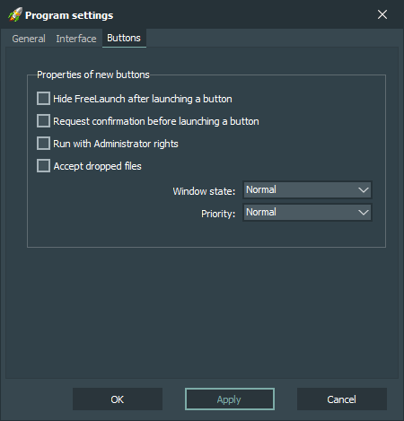

Properties of new buttons:
-
Hide FreeLaunch after launching a button
Hide main application window after button launch.
-
Request confirmation before launching a button
Ask user for confirmation before launching a button.
-
Run with Administrator rights
Launch button object with Administrator rights.
-
Accept dropped files
Force button to accept files dragged to it.
-
Window state
Sets the window state of the launched object.
-
Priority
Sets the priority of the launched object.